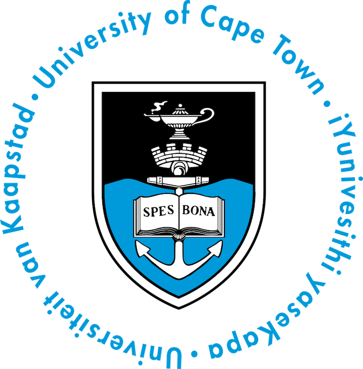

I hold an M.Sc in Biomedical Engineering from Carnege Mellon University where I worked with Prof. Steven Chase. Before that, I received a B.Sc in Electrical Engineering from the University of Cape Town, South Africa.
Publications & Conference Proceedings
2020
Building an Ex Vivo Atlas of the Earliest Brain Regions Affected by Alzheimer's Disease Pathology
, LEM Wisse, R Ityerrah, S Lim, ..., P Yushkevich
ISBI'20 | International Symposium on Biomedical Imaging
pdf
talk
Novel ex vivo MRI atlas of the medial temporal lobe can be used to characterize structural changes due to Alzheimer’s Disease pathology
, LEM Wisse, R Ityerrah, S Lim, ..., P Yushkevich
AAIC'20 | Alzheimer's Association International Conference
abstract
talk
High-resolution postmortem MRI reveals TDP-43 association with medial temporal lobe subregional atrophy
LEM Wisse, , R Ityerrah, S Lim, ..., P Yushkevich
AAIC'20 | Alzheimer's Association International Conference
abstract
3D Mapping of Tau Neurofibrillary Tangle Pathology in the Human Medial Temporal Lobe
P Yushkevich, MMI de Onzoño Martin, R Ittyerah, S Lim,..., ,...,R Insausti
ISBI'20 | International Symposium on Biomedical Imaging
abstract
2019
Facilitating Manual Segmentation of 3D Datasets Using Contour And Intensity Guided Interpolation
, LEM Wisse, Y Gao, G Gerig, P Yushkevich
ISBI'19 | International Symposium on Biomedical Imaging
pdf
poster
Distinct types of neural reorganization during long-term learning
X Zhou, RN Tien, , SM Chase
Journal of neurophysiology 121 (4), 1329-134
pdf
Awards and Honors
